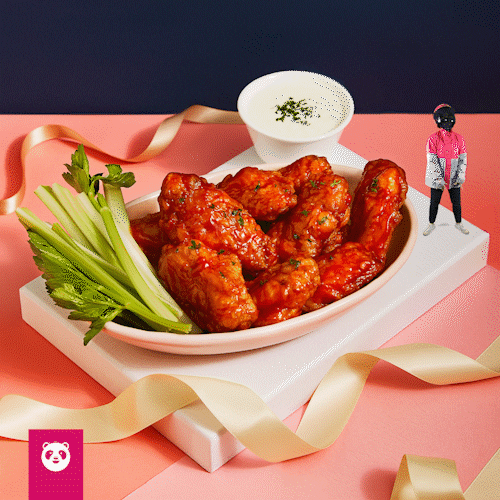
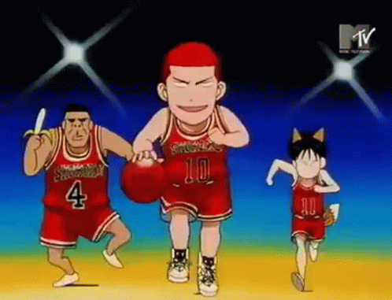

1. Favorite Food
Buttered Chicken, and Buffalo Chicken Wings
 Buttered chicken is my most favorite foods to eat, along with the Buffalo Chicken Wings because I like the how it is spicy at the same time yummy, in my view once I ate one chicken I will likely crave it again. I like all foods but this is my most favorite one to eat.
2. Favorite Sport
Basketball
 Basketball is one of my favorite sports to play, since it is the first sport I played when I was a kid. Basketball, was one of the reasons why I know a lot of people and I made a lot of friends because of the sport.
3. Favorite Anime
One Piece
 One Piece is one of the anime series that I have been watching since I was grade 6, until know it is ongoing
where it has already reached 1000 episodes, it is one of my favorite anime because it is a funny anime, and
there are lots of mysteries to be solved on what will happen on the ending since until now it is still ongoing.
One Piece is one of the anime series that I have been watching since I was grade 6, until know it is ongoing
where it has already reached 1000 episodes, it is one of my favorite anime because it is a funny anime, and
there are lots of mysteries to be solved on what will happen on the ending since until now it is still ongoing.